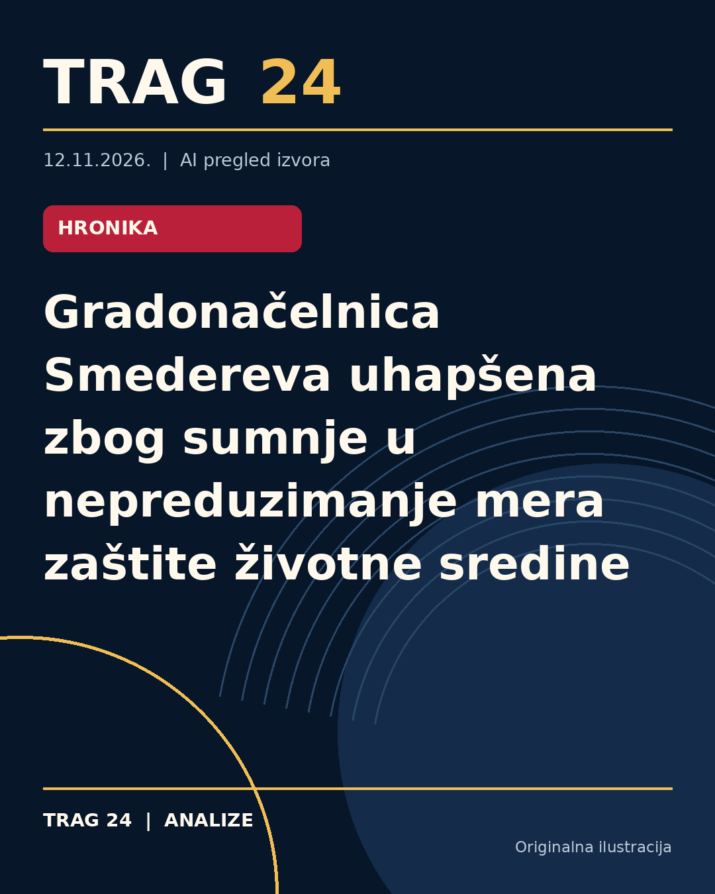

Gradonačelnica Smedereva uhapšena zbog sumnje u nepreduzimanje mera zaštite životne sredine

ŠTA SE DOGODILO
Policija u Smederevu uhapsila je gradonačelnicu J. V. (55), načelnicu Gradske uprave I. S. (43) i direktora JKP „Zelenilo i groblja“ M. I. (43) zbog sumnje da nisu preduzeli propisane mere zaštite životne sredine u vezi sa radom nelegalne deponije komunalnog otpada u Radincu kod Smedereva. Direktor JKP se pored toga tereti i za krivično delo protivpravne izgradnje i stavljanje u pogon objekata koji zagađuju životnu sredinu.
HRONOLOGIJA
Hapšenje je sprovedeno nakon što su, 2. novembra, pripadnici Ministarstva unutrašnjih poslova, zajedno sa Osnovnim javnim tužilaštvom i republičkim i gradskim inspekcijama, izvršili kontrolu na osnovu prijava građana. U toj kontroli je utvrđeno da deponija funkcioniše na zemljištu u vlasništvu grada, a da JKP „Zelenilo i groblja“ nema potrebne dozvole za odlaganje otpada, kao ni drugu potrebnu dokumentaciju. Takođe, Gradska uprava Smedereva nije posedovala Lokalni plan upravljanja otpadom niti dokumentaciju za izgradnju sanitarne deponije. Nakon hapšenja, osumnjičenima je određeno zadržavanje do 48 sati, nakon čega će biti privedeni nadležnom tužiocu.
ŠTA NAVODE IZVORI
Svi tri izvora – Kurir, Blic i Danas – slažu se da je hapšenje rezultat inspekcijskih provera nelegalne deponije u Radincu i da postoje osnovane sumnje o nepreduzimanju mera zaštite životne sredine. Direktor JKP tereti se dodatno za protivpravnu izgradnju i stavljanje u rad postrojenja koja zagađuju okolinu. Hapšenje je sprovedeno u saradnji sa nadležnim pravosudnim organima i na osnovu prijava građana. Svi izvori ističu da su osumnjičenima određena zadržavanja do 48 sati po nalogu tužilaštva.
ŠTA JE POTVRĐENO
Potvrđeno je hapšenje tri osobe – gradonačelnice, načelnice Gradske uprave i direktora JKP „Zelenilo i groblja“. Postoje informacije da u vreme kontrole nije bilo zakonske dokumentacije koja bi opravdala upotrebu deponije, kao i da je deponija funkcionisala na zemljištu u vlasništvu grada. Takođe je potvrđeno da se protiv njih vodi krivični postupak zbog nepreduzimanja mera zaštite životne sredine i protivpravne izgradnje u slučaju direktora JKP.
ŠTA NIJE POTVRĐENO
Nije potvrđeno da su osumnjičeni već imali pravosnažne presude ili da su zvanično podignute optužnice, jer su im određena zadržavanja do 48 sati nakon čega će biti privedeni nadležnom tužiocu. Takođe, nije poznato da li su do sada postojale preventivne ili druge mere koje su osumnjičene sprečavale ili upozoravale na nepravilnosti u radu deponije.
ŠTA OSTАJE OTVORENO: Ostaje nejasno kako će dalje teći postupak i koje će kaznene mere biti eventualno izrečene osumnjičenima. Takođe, nisu poznati detalji o razmerama zagađenja životne sredine, kao ni da li je ova situacija izolovani slučaj ili deo šireg problema u upravljanju otpadom u Smederevu. Dalje informacije o toku istrage, eventualnim izjavama osumnjičenih ili zvaničnim stavovima gradskih vlasti ostaju da budu naknadno objavljene.
Izvori
- https://www.kurir.rs/crna-hronika/10160646/uhapsena-gradonacelnica-smedereva-nelegalna-deponija-radinac
- https://www.blic.rs/vesti/politika/mup-o-hapsenju-gradonacelnice-smedereva-evo-za-sta-je-optuzena-jasmina-vojinovic/bp4knxm
- https://www.danas.rs/vesti/drustvo/oglasio-se-mup-o-hapsenju-gradonacelnice-smedereva/
Ova analiza je pripremljena uz pomoć veštačke inteligencije na osnovu javno dostupnih izvora. Navodi izvora nisu nužno nezavisno potvrđeni.